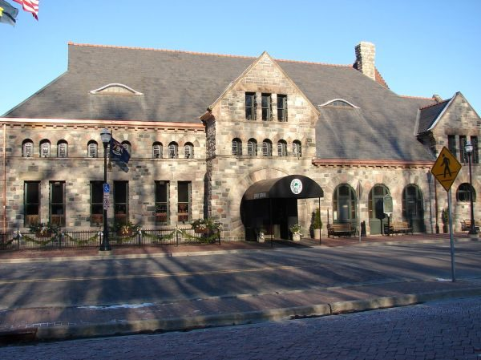

New England Clam Chowder - Maine Style

Photo: Counselman Collection (CC BY-SA 2.0)
A creamy Maine-style clam chowder made with fresh clams, salt pork or bacon, potatoes, milk, and heavy cream, thickened with a butter-and-flour mixture.
Directions
- Drain the clams. Strain the liquid through cheesecloth if sandy; save it for later. Chop the clams into medium size pieces.
- Cook salt pork or bacon in a deep heavy pot until the fat is rendered.
- Add the onions and cook, stirring until they start to turn golden.
- Add diced potatoes, thyme and boiling water; cook about 10 minutes.
- Add the clams, the milk and 1 1/2 tsp of the butter; cook about 15 minutes.
- Heat the remaining butter; blend in the flour. Gradually add the clam liquid to this mixture and stir until smooth; then add the mixture to the chowder for the last 5 minutes of cooking. Just before serving. add the warmed heavy cream. Salt and pepper to taste.
- Drain the 3 cups clams. Strain the liquid through cheesecloth if it is sandy and save it for later. Chop the clams into medium-size pieces.
- Cook the salt pork or bacon in a deep heavy pot until the fat is rendered.
- Add the chopped onion and cook, stirring, until it starts to turn golden.
- Add the 1 1/2 cups diced potatoes, 1/4 tsp thyme, and 1 cup boiling water; cook about 10 minutes.
- Add the clams, the 1 1/2 cups warmed milk, and 1 1/2 tsp of the butter; cook about 15 minutes.
- Heat the remaining butter and blend in the flour. Gradually add the reserved clam liquid to this mixture and stir until smooth; then add the mixture to the chowder for the last 5 minutes of cooking.
- Just before serving, add the 1/2 cup warmed heavy cream. Season with salt and pepper to taste.
Goes well with
https://baron-3dl.github.io/normans-kitchen/recipe/new-england-clam-chowder-maine-style.html